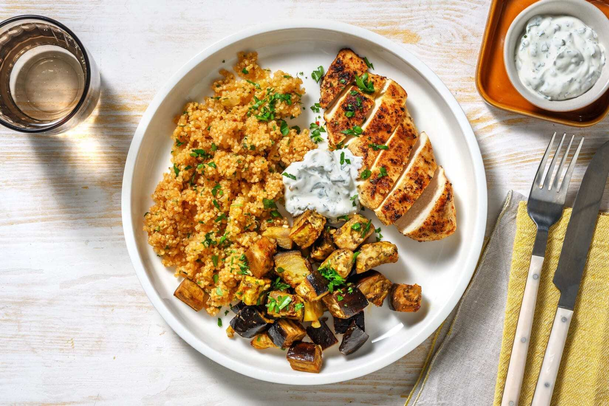
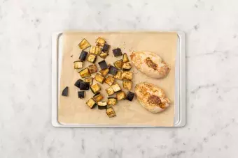
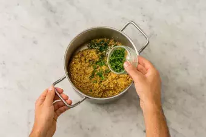
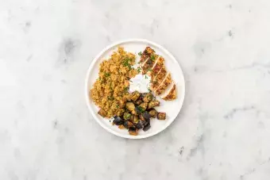

dazu Tomatenquinoa und Minzdip
Ohne Weizen High Protein unter 650 Kalorien 40 Minuten | 586 kcal | Schwierigkeitsgrad: mittel
Mhhm … dieses Gericht ist genau richtig, um ausgewogen zu genießen! Und dabei sogar richtig proteinreich dank des Hähnchens. Ein echt einfaches und schnell gemachtes Gericht, das Dir heute den Tag verschönert. Wir wünschen Dir guten Appetit!
Das wird auch benötigt:
Heize den Backofen auf 220 °C Ober-/Unterhitze (200 °C Umluft) vor. Erhitze Wasser im Wasserkocher. Enden der Aubergine abschneiden und Aubergine in 2 cm große Würfel schneiden. Knoblauch und Zwiebel abziehen und beides getrennt voneinander fein hacken. Auberginenwürfel auf ein mit Backpapier belegtes Backblech geben und mit gehacktem Knoblauch, der Hälfte des Harissa-Gewürzes, 1 EL Olivenöl, Salz und Pfeffer vermengen. Für 20 – 25 Min. backen.
In einem Sieb Quinoa so lange mit kaltem Wasser abspülen, bis dieses klar hindurchläuft. Zwiebelwürfel und die Hälfte vom Tomatenmark in einen kleinen Topf mit 1 EL Olivenöl geben und 1 – 2 Min. bei mittlerer Hitze anbraten. Quinoa, 200 ml heißes Wasser und Gemüsebrühe hinzugeben. Alles einmal aufkochen und dann mit geschlossenem Deckel auf niedrigster Stufe 15 Min. köcheln lassen. Anschließend vom Herd nehmen und 10 Min. quellen lassen.
HÄHNCHENBRUST MARINIEREN
Hähnchenbrustfilets mit dem restlichen Harissa-Gewürz, Salz und Pfeffer würzen. In einer großen Pfanne 1 EL Olivenöl erhitzen und darin die Hähnchenbrustfilets 1 – 2 Min. je Seite anbraten, bis diese leicht gebräunt sind. Angebratene Hähnchenbrustfilets in den letzten 12 – 14 Min. mit auf das Backblech geben und mitbacken, bis das Hähnchen innen nicht mehr rosa ist.
FÜR DEN DIP
Blätter von Minze und Petersilie abzupfen und getrennt voneinander fein hacken. In einer kleinen Schüssel Sahnejoghurt mit der gehackten Minze verrühren. Dip mit Salz und Pfeffer abschmecken.
QUINOA ABSCHMECKEN
Nach dem Ende der Garzeit die Hälfte der gehackten Petersilie unter die Quinoa heben und mit Salz und Peffer abschmecken.
ANRICHTEN
Die Hähnchenbrust und das Gemüse aus dem Ofen nehmen und auf Teller verteilen. Tomaten-Quinoa und Minzdip dazu anrichten. Mit der restlichen Petersilie garnieren. Guten Appetit!